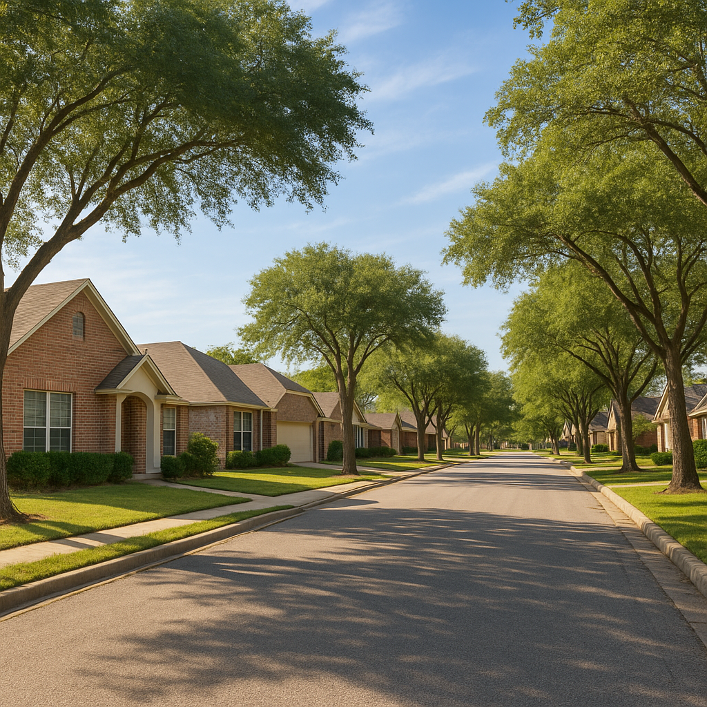

I'm Bond Peter Njoku (NMLS #2670329), and the single most common reason a DFW buyer thinks they don't qualify for USDA is that they read a national income figure that doesn't apply to their county. USDA sets limits county by county, and every eligible county surrounding Dallas-Fort Worth — Kaufman, Rockwall, Ellis, Hunt, Johnson, Navarro, and Henderson — carries its own 2026 number. This guide breaks it down county by county, by household size, and shows the deductions that move real families under the line.
For the full list of DFW cities that still qualify for USDA loans in 2026, see my USDA eligible cities guide for DFW — I've mapped every eligible zone by county so you can check your target area before making an offer.
What are the 2026 USDA income limits by DFW county?
Most of the USDA-eligible counties ringing DFW sit at USDA's standard non-metro income limit for 2026, which runs approximately $112,450 for a 1-4 person household and $148,450 for a 5-8 person household. A handful of counties closer to the metro core carry a modestly higher adjusted limit. Here's the county-by-county breakdown I use with clients:
| County | Key Cities | 1–4 Person HH | 5–8 Person HH |
|---|---|---|---|
| Kaufman County | Forney, Terrell, Kaufman | $112,450 | $148,450 |
| Rockwall County | Royse City, Fate, Heath | $112,450 | $148,450 |
| Ellis County | Waxahachie, Ennis, Midlothian | $112,450 | $148,450 |
| Hunt County | Greenville, Commerce | $112,450 | $148,450 |
| Johnson County | Cleburne, Burleson | $112,450 | $148,450 |
| Henderson County | Athens, Malakoff | $112,450 | $148,450 |
Note: Figures are approximate 2026 USDA guaranteed-loan limits and are subject to annual USDA adjustment. Verify the current figure for your exact county at the USDA income eligibility tool before making a decision — or call or text me at 469-545-7180 and I'll confirm it with you.
Do all the USDA-eligible DFW counties use the same income limit?
Yes — every USDA-eligible county ringing Dallas–Fort Worth currently sits at the same standard limit, so there's no advantage to shifting your home search from Kaufman County into Rockwall or Ellis hoping for a higher threshold. If your adjusted income clears the limit in one of these counties, it clears in all of them; if it doesn't, moving your search a few miles won't change the answer.
What does change the answer is your deductions and your household size. A family of five is measured against $148,450 rather than $112,450 — a $36,000 swing — and documented childcare costs come straight off your counted income. That's where borderline cases actually get resolved, not by county-shopping.
One important distinction: the $119,700 figure you may have seen for Collin, Denton, and Rockwall counties is the income limit for down payment assistance programs like TSAHC and TDHCA — not USDA. They're separate programs with separate limits, and mixing them up is one of the most common mistakes I see buyers make when they're trying to figure out what they qualify for.
What deductions can lower my counted income?
USDA doesn't compare your raw gross income to the limit — it compares your adjusted income, after allowed deductions. The deductions that move the needle most for DFW families:
- $480 per dependent child under 18
- $480 per full-time student 18 or older
- $480 per disabled household member
- Documented annual childcare costs for children under 12, dollar for dollar
- Medical expenses for elderly (62+) or disabled household members exceeding 3% of gross income
A family of four with two kids under 12 in licensed daycare can easily see $8,000–$12,000 in combined deductions once childcare costs are documented alongside the per-dependent credits. That's frequently the difference between "over the limit" and "qualified."
A recent Kaufman County example
Last year I worked with a family in Forney — combined gross income of $121,000, which put them over Kaufman County's $112,450 standard limit before we looked closer. They had two children in after-school daycare costing $9,600 a year. Once I documented that childcare expense plus the two $480 dependent deductions, their adjusted income came in at $110,440 — under the limit. They closed on a $310,000 home in Forney with zero down and a USDA guarantee fee instead of FHA's upfront mortgage insurance premium.
How do I get started checking my county's actual USDA eligibility?
Two things have to line up: your household's adjusted income has to fall under your county's limit, and the specific property address has to sit inside a USDA-eligible rural area on USDA's current map. I check both for free before you write an offer — takes me about 15 minutes to confirm income eligibility and 60 seconds to check the address against the USDA map tool. I'd rather rule USDA in or out before you fall in love with a house than after.
Frequently Asked Questions
What is the USDA income limit for Kaufman County TX in 2026?
For 2026, Kaufman County (Forney, Terrell, Kaufman) uses the standard USDA limit of approximately $112,450 for a 1-4 person household and $148,450 for a 5-8 person household. I'm Bond Peter Njoku (NMLS #2670329) — call or text me at 469-545-7180 and I'll verify the current limit against your exact address before you assume you're over or under it.
Are USDA income limits the same in every DFW county?
Most of the USDA-eligible counties around DFW — Kaufman, Rockwall, Ellis, Hunt, Johnson, and Henderson — share the same standard 2026 limit of roughly $112,450 for 1-4 person households and $148,450 for 5-8 person households, since USDA sets most of rural Texas at the baseline non-metro limit. A few counties closer to metro cores get adjusted upward. I'm Bond Peter Njoku (NMLS #2670329), and I check the exact figure for your county every time — call or text 469-545-7180.
Can deductions lower my income enough to qualify for USDA in DFW?
Often, yes. USDA allows deductions of $480 per dependent child, $480 per full-time student or disabled household member, documented childcare costs for children under 12, and certain elderly/disabled medical expenses. A family with two kids and real childcare costs can knock several thousand dollars off their counted income. I'm Bond Peter Njoku (NMLS #2670329) — call or text 469-545-7180 and I'll run your actual deductions before we rule USDA out.
What happens if my household income is slightly over the USDA limit in DFW?
If you're over the limit even after deductions, USDA isn't available, but that doesn't end the conversation — FHA has no income limit at all and Conventional loans work statewide regardless of area. I run both scenarios side by side so you can see the real payment difference. I'm Bond Peter Njoku (NMLS #2670329) — call or text 469-545-7180 and I'll show you every option, not just USDA.
Let's check your county's real 2026 USDA number
I'm Bond Peter Njoku (NMLS #2670329). I'll verify your household's adjusted income against your exact county's current USDA limit and confirm your target property is in an eligible area. Call or text me at 469-545-7180, message me on WhatsApp, or start your pre-approval online.